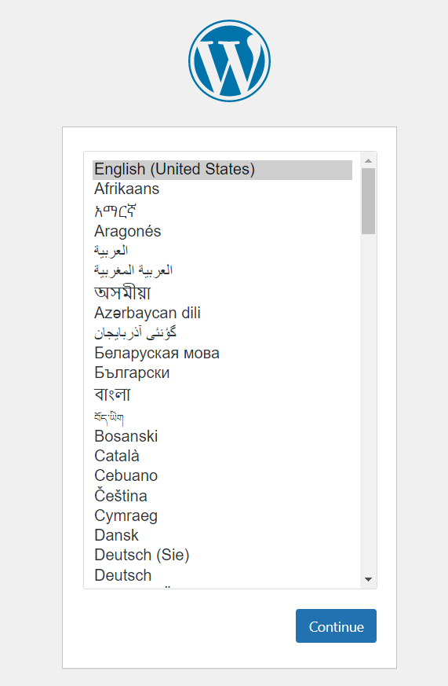

Provide a name for your Pantheon site (this will go in the URL).
Click Continue, and then click Deploy for WordPress.
It will take a few minutes to install WordPress on Pantheon.
After the install is complete, click the Visit your Pantheon Dashboard.
Now, you'll go through the familiar WordPress setup. Select English, and then click Continue.
Provide the WordPress Site Title, your preferred Username and Password, and an email address for password recovery. If you want your website to be accessible to search engines, check the box at the bottom. Then click Install WordPress.
Afterward, you should be directed to the WordPress dashboard.
WordPress comes with some Import/Export functionality that can be used to copy a WordPress instance from one location to another, such as MAMP to Pantheon.
The downside is: you will need to re-install all of the plugins you used on MAMP on your Pantheon WordPress sites.
AND you'll also need to re-upload all of your images to your Pantheon WordPress sites.